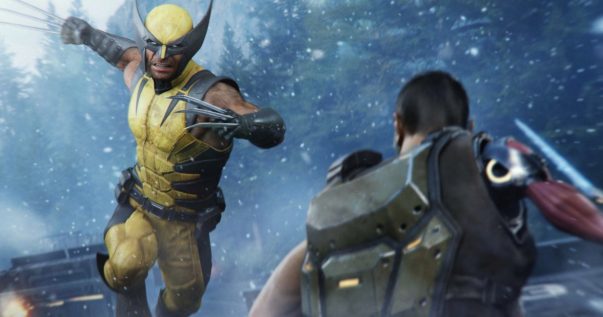

Gaming · 22 Oct 2026
Despite its mixed reception, Marvel's Wolverine was September's top-selling new game in the US, making Sony launch revenues it hasn't seen since Helldivers 2

Marvel's Wolverine may not have had the best critical reception , but that clearly didn't discourage consumers. The action-adventure from Marvel's Spider-Man studio Insomniac has topped US video game sales in September, despite releasing exactly halfway through the month. Read more
Multiple independent publishers are reporting on the same development: Despite its mixed reception, Marvel's Wolverine was September's top-selling new game in the US, making Sony launch revenues it hasn't seen since Helldivers 2.
The available reports place the development in the Gaming category. The accounts were compared for agreement on the central event rather than simply shared names or broad topics.
One of the available reports describes the development this way: Marvel's Wolverine may not have had the best critical reception , but that clearly didn't discourage consumers. The action-adventure from Marvel's Spider-Man studio Insomniac has topped US video game sales in September, despite releasing exactly halfway through the month. Read more
Readers should consult the linked source reports for additional context, updates and details that may change as the story develops.
Sources
This article was produced by the C. O. Eric AI Newsroom from the cited sources. It is published only after automated evidence and safety checks.